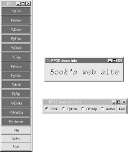
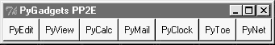
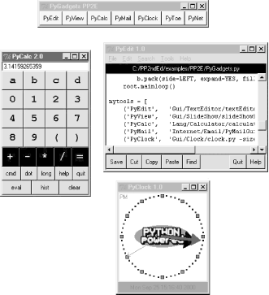

| I l@ve RuBoard |
|
8.9 The PyDemos and PyGadgets LaunchersTo close out this chapter, I want to show the implementations of the two GUIs used to run major book examples. The following GUIs, PyDemos and PyGadgets, are simply GUIs for launching other GUI programs. In fact, we've now come to the end of the demo launcher story: both of the programs here interact with modules that we met earlier in Chapter 8 and Chapter 3:
See Examples Example 3-24, Example 4-14, and Example 4-15 for the code for these modules. The programs listed here add the GUI components to the program launching system -- they simply provide easy-to-use pushbuttons that spawn most of the larger examples in this text when pressed. Both these scripts also assume that they will be run with the current working directory set to their directory (they hardcode paths to other programs relative to that). Either click on their names in a file explorer, or run them from a command-line shell after a cd to the top-level PP2E examples root directory. These scripts could allow invocations from other directories by prepending the PP2EHOME environment variable's value to program script paths, but they were really only designed to be run out of the PP2E root. 8.9.1 PyDemos Launcher BarThe PyDemos script constructs a bar of buttons that run programs in demonstration mode, not for day-to-day use. I use PyDemos to show off Python programs whenever I can -- it's much easier to press its buttons than to run command lines or fish through a file explorer GUI to find scripts. You should use PyDemos to start and interact with examples presented in this book -- all of the buttons on this GUI represent examples we will meet in later chapters. To make this launcher bar even easier to run, drag it out to your desktop to generate a clickable Windows shortcut (do something similar on other systems). Since this script hardcodes command lines for running programs elsewhere in the examples tree, it is also useful as an index to major book examples. Figure 8-39 shows what PyDemos looks like when run on Windows; it looks slightly different but works the same on Linux. Figure 8-39. PyDemos with its pop-upsThe source code that constructs this scene is listed in Example 8-32. PyDemos doesn't present much new in terms of GUI interface programming; its demoButton function simply attaches a new button to the main window, spring-loaded to spawn a Python program when pressed. To start programs, PyDemos calls an instance of the launchmodes.PortableLauncher object we met at the end of Chapter 3 -- its role as a Tkinter callback handler here is why a call operation is used to kick off the launched program. As pictured in Figure 8-39, PyDemos also constructs two pop-up windows when buttons at the bottom of the main window are pressed -- an Info pop-up giving a short description of the last demo spawned, and a Links pop-up containing radiobuttons that open a local web browser on book-related sites when pressed:
PyDemos runs on Windows and Linux, but that's largely due to the inherent portability of both Python and Tkinter. For more details, consult the source, which is shown in Example 8-32. Example 8-32. PP2E\PyDemos.pyw##############################################################################
# PyDemos.pyw
# Programming Python, 2nd Edition (PP2E), 1999--2001
#
# Launch major Python+Tk GUI examples from the book, in a
# platform-neutral way. This file also serves as an index
# to major program examples, though many book examples aren't
# GUI-based, and so aren't listed here (e.g., see the Linux
# gcc build scripts in the examples root directory for C
# integration program pointers). Also see:
#
# - PyGadgets.py, a simpler script for starting programs in
# non-demo mode that you wish to use on a regular basis
# - PyGadgets_bar.pyw, which creates a button bar for starting
# all PyGadgets programs on demand, not all at once
# - Launcher.py for starting programs without environment
# settings--finds Python, sets PYTHONPATH, etc.
# - Launch_*.py for starting PyDemos and PyGadgets with
# Launcher.py--run these for a quick look
# - LaunchBrowser.py for running example web pages with an
# automatically-located web browser
# - README-PP2E.txt, for general examples information
#
# Internet-based demos live here:
# http://starship.python.net/~lutz/PyInternetDemos.html
# but this program tries to start a browser on the main web pages
# automatically, either on the site above or on local page files.
# Additional program comments were moved to file PyDemos.doc.txt
##############################################################################
import sys, time, os, launchmodes
from Tkinter import *
# -live loads root pages off net, -file loads local files
InternetMode = '-file'
##################################
# start building main gui windows
##################################
Root = Tk()
Root.title('PP2E Demos')
# build message window
Stat = Toplevel()
Stat.protocol('WM_DELETE_WINDOW', lambda:0) # ignore wm delete
Stat.title('PP2E demo info')
Info = Label(Stat, text = 'Select demo',
font=('courier', 20, 'italic'), padx=12, pady=12, bg='lightblue')
Info.pack(expand=YES, fill=BOTH)
#############################################
# add launcher buttons with callback objects
#############################################
# demo launcher class
class Launcher(launchmodes.PortableLauncher): # use wrapped launcher class
def announce(self, text): # customize to set GUI label
Info.config(text=text)
def demoButton(name, what, where):
b = Button(Root, bg='navy', fg='white', relief=RIDGE, border=4)
b.config(text=name, command=Launcher(what, where))
b.pack(side=TOP, expand=YES, fill=BOTH)
demoButton('PyEdit',
'Text file editor', # edit myself
'Gui/TextEditor/textEditor.pyw PyDemos.pyw') # assume in cwd
demoButton('PyView',
'Image slideshow, plus note editor',
'Gui/SlideShow/slideShowPlus.py Gui/gifs')
demoButton('PyDraw',
'Draw and move graphics objects',
'Gui/MovingPics/movingpics.py Gui/gifs')
demoButton('PyTree',
'Tree data structure viewer',
'Dstruct/TreeView/treeview.py')
demoButton('PyClock',
'Analog/digital clocks',
'Gui/Clock/clockStyles.py Gui/gifs')
demoButton('PyToe',
'Tic-tac-toe game (AI)',
'Ai/TicTacToe/tictactoe.py')
demoButton('PyForm', # view in-memory dict
'Persistent table viewer/editor', # or cwd shelve of class
#'Dbase/TableBrowser/formgui.py') # 0=do not reinit shelve
#'Dbase/TableBrowser/formtable.py shelve 0 pyformData-1.5.2')
'Dbase/TableBrowser/formtable.py shelve 1 pyformData')
demoButton('PyCalc',
'Calculator, plus extensions',
'Lang/Calculator/calculator_plusplus.py')
demoButton('PyMail',
'Python+Tk pop/smtp email client',
'Internet/Email/PyMailGui.py')
demoButton('PyFtp',
'Python+Tk ftp clients',
'Internet/Ftp/PyFtpGui.pyw')
if InternetMode == '-file':
pagepath = os.getcwd() + '/Internet/Cgi-Web'
demoButton('PyErrata',
'Internet-based errata report system',
'LaunchBrowser.py -file %s/PyErrata/pyerrata.html' % pagepath)
demoButton('PyMailCgi',
'Browser-based pop/smtp email interface',
'LaunchBrowser.py -file %s/PyMailCgi/pymailcgi.html' % pagepath)
demoButton('PyInternet',
'Internet-based demo launcher page',
'LaunchBrowser.py -file %s/PyInternetDemos.html' % pagepath)
else:
site = 'starship.python.net/~lutz'
demoButton('PyErrata',
'Internet-based errata report system',
'LaunchBrowser.py -live PyErrata/pyerrata.html ' + site)
demoButton('PyMailCgi',
'Browser-based pop/smtp email interface',
'LaunchBrowser.py -live PyMailCgi/pymailcgi.html ' + site)
demoButton('PyInternet',
'Main Internet demos launcher page',
'LaunchBrowser.py -live PyInternetDemos.html ' + site)
#To try: bind mouse entry events to change info text when over a button
#See also: site http://starship.python.net/~lutz/PyInternetDemos.html
#############################################
# toggle info message box font once a second
#############################################
def refreshMe(info, ncall):
slant = ['normal', 'italic', 'bold', 'bold italic'][ncall % 4]
info.config(font=('courier', 20, slant))
Root.after(1000, (lambda info=info, ncall=ncall: refreshMe(info, ncall+1)) )
########################################
# unhide/hide status box on info clicks
########################################
Stat.iconify()
def onInfo():
if Stat.state() == 'iconic':
Stat.deiconify()
else:
Stat.iconify() # was 'normal'
############################################
# popup a few web link buttons if connected
############################################
radiovar = StringVar() # use a global
def onLinks():
popup = Toplevel()
popup.title('PP2E web site links')
links = [("Book", 'LaunchBrowser.py -live about-pp.html rmi.net/~lutz'),
("Python", 'LaunchBrowser.py -live index.html www.python.org'),
("O'Reilly", 'LaunchBrowser.py -live index.html www.oreilly.com'),
("Author", 'LaunchBrowser.py -live index.html rmi.net/~lutz')]
for (name, command) in links:
callback = Launcher((name + "'s web site"), command)
link = Radiobutton(popup, text=name, command=callback)
link.config(relief=GROOVE, variable=radiovar, value=name)
link.pack(side=LEFT, expand=YES, fill=BOTH)
Button(popup, text='Quit', command=popup.destroy).pack(expand=YES,fill=BOTH)
if InternetMode != '-live':
from tkMessageBox import showwarning
showwarning('PP2E Demos', 'Web links require an Internet connection')
#############################################
# finish building main gui, start event loop
#############################################
Button(Root, text='Info', command=onInfo).pack(side=TOP, fill=X)
Button(Root, text='Links', command=onLinks).pack(side=TOP, fill=X)
Button(Root, text='Quit', command=Root.quit).pack(side=BOTTOM, fill=X)
refreshMe(Info, 0) # start toggling
Root.mainloop()
8.9.2 PyGadgets Launcher BarThe PyGadgets script runs some of the same programs as PyDemos, but for real, practical use, not as flashy demonstrations. Both scripts use launchmodes to spawn other programs and display bars of launcher buttons, but this one is a bit simpler because its task is more focused. PyGadgets also supports two spawning modes: it can either start a canned list of programs immediately and all at once, or display a GUI for running each program on demand (Figure 8-40 shows the launch bar GUI made in on-demand mode). Because of such differences, PyGadgets takes a more data-driven approach to building the GUI: it stores program names in a list and steps through it as needed, rather than using a sequence of precoded demoButton calls. The set of buttons on the launcher bar GUI in Figure 8-40, for example, depends entirely upon the contents of the programs list. Figure 8-40. PyGadgets launcher barThe source code behind this GUI is listed in Example 8-33; it's not much, because it relies on other modules (launchmodes, LaunchBrowser) to work most of its magic. PyGadgets is always open on my machines (I have a clickable shortcut to this script on my Windows desktop too). I use it to gain easy access to Python tools that I use on a daily basis -- text editors, calculators, and so on -- all of which we'll meet in upcoming chapters. To customize PyGadgets for your own use, simply import and call its functions with program command-line lists of your own, or change the mytools list of spawnable programs near the end of this file. This is Python, after all. Example 8-33. PP2E\PyGadgets.py#!/bin/env python
####################################################################
# Start various examples; run me at system boot time to make them
# always available. This file is meant for starting programs you
# actually wish to use; see PyDemos for starting Python/Tk demos
# and more details on program start options. Windows usage note:
# this is a '.py' file, so you get a dos box console window when it
# is clicked; the dos box is used to show a startup message (and we
# sleep 5 seconds to make sure it's visible while gadgets start up).
# If you don't want the dos popup, run with the 'pythonw' program
# (not 'python'), use a '.pyw' suffix, mark with a 'run minimized'
# Windows property, or spawn the file from elsewhere; see PyDemos.
####################################################################
import sys, time, os, time
from Tkinter import *
from launchmodes import PortableLauncher # reuse program start class
def runImmediate(mytools):
# launch gadget programs immediately
print 'Starting Python/Tk gadgets...' # msgs to temp stdout screen
for (name, commandLine) in mytools:
PortableLauncher(name, commandLine)() # call now to start now
print 'One moment please...' # \b means a backspace
if sys.platform[:3] == 'win':
# on Windows keep stdio console window up for 5 seconds
for i in range(5): time.sleep(1); print ('\b' + '.'*10),
def runLauncher(mytools):
# put up a simple launcher bar for later use
root = Tk()
root.title('PyGadgets PP2E')
for (name, commandLine) in mytools:
b = Button(root, text=name, fg='black', bg='beige', border=2,
command=PortableLauncher(name, commandLine))
b.pack(side=LEFT, expand=YES, fill=BOTH)
root.mainloop()
mytools = [
('PyEdit', 'Gui/TextEditor/textEditor.pyw'),
('PyView', 'Gui/SlideShow/slideShowPlus.py Gui/gifs'),
('PyCalc', 'Lang/Calculator/calculator.py'),
('PyMail', 'Internet/Email/PyMailGui.py'),
('PyClock', 'Gui/Clock/clock.py -size 175 -bg white'
' -picture Gui/gifs/pythonPowered.gif'),
('PyToe', 'Ai/TicTacToe/tictactoe.py'
' -mode Minimax -fg white -bg navy'),
('PyNet', 'LaunchBrowser.py -file ' + os.getcwd() +
'/Internet/Cgi-Web/PyInternetDemos.html')
]
if __name__ == '__main__':
prestart, toolbar = 1, 0
if prestart:
runImmediate(mytools)
if toolbar:
runLauncher(mytools)
By default, PyGadgets starts programs immediately when it is run. To run PyGadgets in launcher-bar mode instead, Example 8-34 simply imports and calls the appropriate function with an imported program list. Because it is a .pyw file, you only see the launcher bar GUI it constructs initially, not a DOS console streams window. Example 8-34. PP2E\PyGadgets_bar.pyw# run PyGadgets tool bar only, instead of starting all the # gadgets immediately; filename avoids dos popup on windows import PyGadgets PyGadgets.runLauncher(PyGadgets.mytools) This script is the file my desktop shortcut invokes; I prefer to run gadget GUIs on demand. You can also run a script like this at your system's startup to make it always available (and save a mouseclick). For instance:
Whether run via a shortcut, file explorer click, typed command line, or other means, the PyGadgets launcher bar at the top of Figure 8-41 appears. Figure 8-41. PyGadgets launcher barOf course, the whole point of PyGadgets is to spawn other programs. Pressing on its launcher bar's buttons starts programs like those shown in the rest of Figure 8-41, but if you want to know more about those, you'll have to turn the page and move on to the next chapter. |
| I l@ve RuBoard |
|